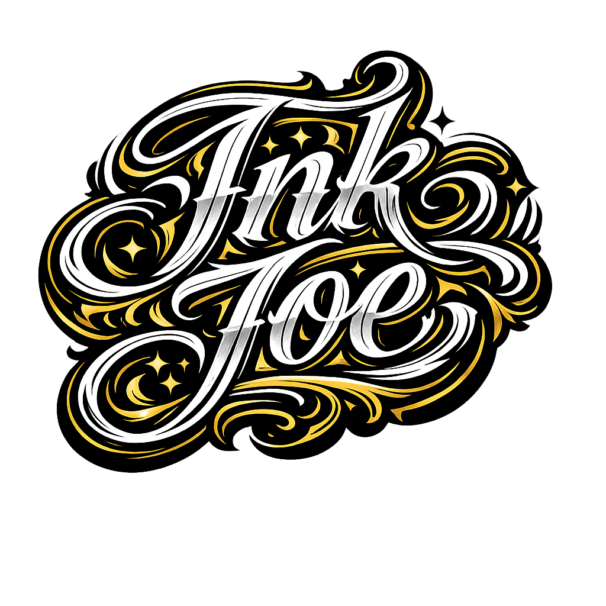

Tattoo Studio

Bem-vindo ao INK JOE Tattoo Studio,
Um espaço criado para transformar ideias em arte na pele com segurança,
criatividade e personalidade. Trabalhamos com diversos estilos,
do fine line ao blackwork, sempre respeitando a identidade e a
história de cada cliente.
Nossos Procedimento
- Antes de qualquer tatuagem, realizamos uma consulta inicial, onde alinhamos o conceito, tamanho,
- local do corpo e estilo desejado. Nessa etapa também orientamos sobre:
- Escolha do desenho e adaptação personalizada
- Definição do tamanho e posicionamento
- Esclarecimento de dúvidas sobre dor, tempo de sessão e cicatrização